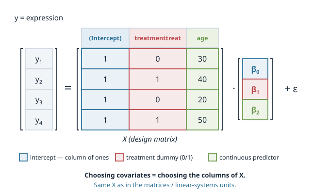
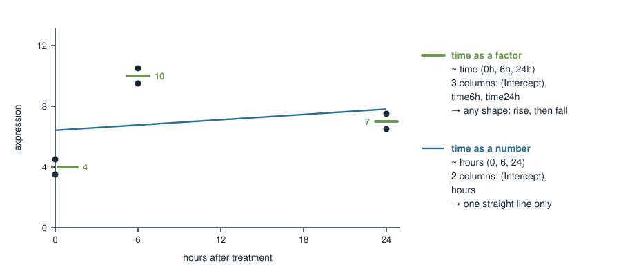
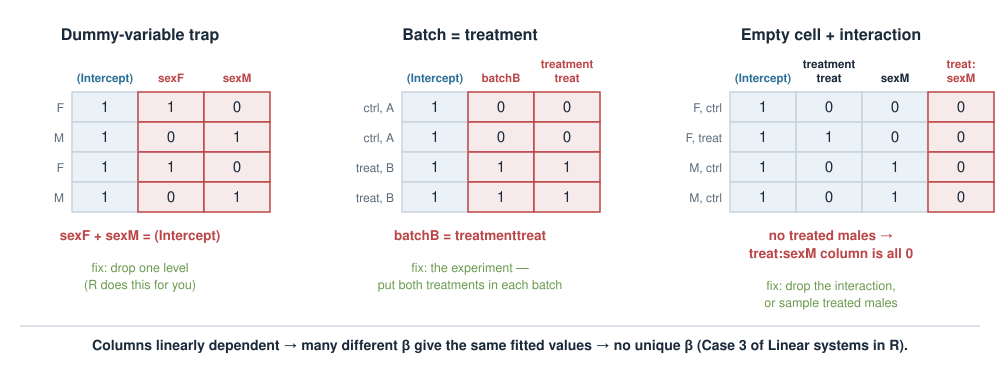
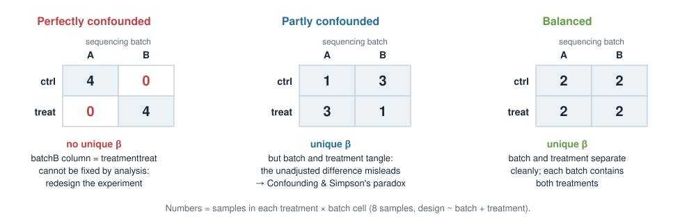

Design matrices for covariates
Linear models — Design matrices for covariates
About this lecture
Real experiments are never clean. Your samples differ in treatment, but also in sex, age, BMI, sequencing batch and time point. Today: how all of these become columns of one matrix, the design matrix \(X\).
- What a covariate is: variable of interest vs nuisance variable.
- How a model formula (
y ~ treatment + age) becomes \(X\), and how \(X\boldsymbol\beta\) gives each sample’s predicted mean. - Continuous (age, BMI) and categorical (sex, treatment, batch, time) predictors, and what each coefficient means.
- Building \(X\) by hand for the common cases, including an interaction column.
- Existence of solutions: when does \(\boldsymbol\beta\) have a unique answer, and what to do when it does not.
One gene, a whole sample sheet
A typical bulk RNA-seq sample sheet. We measure one gene’s expression \(y\) in each sample:
| sample | treatment | sex | age | BMI | batch | time |
|---|---|---|---|---|---|---|
| 1 | ctrl | F | 34 | 22 | A | 0h |
| 2 | treat | M | 51 | 27 | A | 6h |
| 3 | ctrl | M | 45 | 31 | B | 24h |
| 4 | treat | F | 29 | 24 | B | 6h |
| … | … | … | … | … | … | … |
- treatment is what we want to study.
- sex, age, BMI, batch also move expression, so we want them in the model too.
- Some columns are numbers (age, BMI), some are labels (sex, batch). time can be either.
The question for today: how does this table become a matrix that a linear model can use?
What is a covariate?
A covariate is any measured variable you put into the model alongside your predictor of interest.
Two roles, same machinery:
- Variable of interest — the effect you actually want to estimate (e.g. treatment).
- Nuisance / adjustment variable — something that also affects the outcome and that you want to control for so it doesn’t distort the effect of interest (e.g. age, sex, batch).
The model does not know which is which — you decide by how you interpret the coefficients. Mechanically, every covariate is just another column in the design matrix.
The model formula
R describes a model with a formula: outcome on the left, predictors on the right.
# outcome ~ predictor(s)
expr ~ treatment # effect of treatment only
expr ~ treatment + age # treatment, and age
expr ~ treatment + age + sex # treatment, age and sexBehind every formula sits a linear predictor — a weighted sum of the predictors:
\[ \hat{y}_i = \beta_0 + \beta_1 x_{i1} + \beta_2 x_{i2} + \dots \]
Each \(\beta\) is a coefficient: how much \(\hat y\) changes per unit of that predictor, holding the others fixed. Fitting the model = finding the \(\beta\)’s.
With one predictor this is the line \(y = a + bx\) from Fitting equations: \(\beta_0\) is \(a\) (the intercept) and \(\beta_1\) is \(b\) (the slope). We switch to numbered \(\beta\)’s because there can now be many predictors, and R names the coefficients the same way.
From formula to design matrix \(X\)
A formula is a recipe for building a matrix. The outcome is \(\mathbf{y}\); the predictors become the columns of the design matrix \(X\):
\[ \mathbf{y} = X\boldsymbol{\beta} + \boldsymbol{\varepsilon}. \]
One row per sample, one column per coefficient. Here, expr ~ treatment + age for four mice:

Column 1 is all 1’s (the intercept), column 2 is the 0/1 treatment dummy, column 3 is age. This is the same \(X\) as in Matrices as transformations and Linear systems in R — the covariates just decide its columns.
\(X\boldsymbol\beta\) = each sample’s predicted mean
Given coefficients \(\boldsymbol\beta\), the fitted values are a matrix times a vector — one row at a time, as in the matrix × vector drills:
\[ X\boldsymbol\beta = \begin{pmatrix} 1 & 0 & 30\\ 1 & 1 & 40\\ 1 & 0 & 20\\ 1 & 1 & 50 \end{pmatrix} \begin{pmatrix} 2 \\ 3 \\ 0.1 \end{pmatrix} = \begin{pmatrix} 2 + 0 + 3\\ 2 + 3 + 4\\ 2 + 0 + 2\\ 2 + 3 + 5 \end{pmatrix} = \begin{pmatrix} 5 \\ 9 \\ 4 \\ 10 \end{pmatrix}. \]
- Row \(i\) of \(X\) is sample \(i\)’s description; row \(i\) of \(X\boldsymbol\beta\) is its predicted expression \(\hat y_i\).
- Samples with identical rows get identical predictions — this is why, with only factors, \(X\boldsymbol\beta\) gives one predicted mean per group.
- The leftover \(y_i - \hat y_i\) is the residual \(\varepsilon_i\).
Continuous predictors: age, BMI
A continuous covariate enters as a single column of numbers. Its coefficient is a slope.
- \(\beta_1\) = change in expression for each additional unit (one year; one BMI unit). With \(\beta_\text{bmi} = 0.5\), a patient with BMI 30 is predicted \(0.5 \times 8 = 4\) units above one with BMI 22.
- \(\beta_0\) (intercept) = predicted expression at age 0 or BMI 0 — meaningless, so we often centre the predictor:
Centring doesn’t change the slope; it just makes the intercept interpretable.

Categorical predictors: sex, treatment
A categorical covariate (a factor) is not a number — it’s a label. R turns each factor into indicator (dummy) columns.
sex <- factor(c("F","M","F","M")) # two levels: F, M
treatment <- factor(c("ctrl","treat","ctrl","treat"))With the default treatment coding, one level is the reference (baseline), and each other level gets a 0/1 column:
sexM= 1 for males, 0 for females → its coefficient is the male − female difference.- The reference level (F) is absorbed into the intercept.
By default R picks the reference level alphabetically (F before M, ctrl before treat). Set it deliberately with relevel().

One factor: coefficients are group means
expr ~ treatment with 2 controls and 2 treated mice. Only two distinct rows exist:
\[ X = \begin{pmatrix} 1 & 0\\ 1 & 1\\ 1 & 0\\ 1 & 1 \end{pmatrix} \quad \begin{array}{l} \leftarrow \text{ctrl} \\ \leftarrow \text{treat} \\ \leftarrow \text{ctrl} \\ \leftarrow \text{treat} \end{array} \qquad \text{ctrl: } \hat y = \beta_0, \qquad \text{treat: } \hat y = \beta_0 + \beta_1 . \]
If the control mean is 6 and the treated mean is 9, then \(\beta_0 = 6\) and \(\beta_1 = 9 - 6 = 3\).
| Coefficient | Meaning |
|---|---|
(Intercept) \(\beta_0\) |
mean of the reference group (ctrl) |
treatmenttreat \(\beta_1\) |
treat − ctrl, the difference you care about |
This coding scheme is called the factor’s contrasts; contrasts(treatment) prints the 0/1 table. Other schemes (e.g. contr.sum) change what the coefficients mean, never the fitted values.
Factor + continuous: sex and BMI
expr ~ sex + bmi: one dummy column, one number column.
| sample | sex | BMI | (Intercept) | sexM | bmi | \(\hat y\) for \(\boldsymbol\beta = (1,\ 2,\ 0.5)\) | ||
|---|---|---|---|---|---|---|---|---|
| 1 | F | 22 | 1 | 0 | 22 | \(1 + 0 + 11 = 12\) | ||
| 2 | M | 24 | 1 | 1 | 24 | \(1 + 2 + 12 = 15\) | ||
| 3 | F | 30 | 1 | 0 | 30 | \(1 + 0 + 15 = 16\) | ||
| 4 | M | 28 | 1 | 1 | 28 | \(1 + 2 + 14 = 17\) |
bmi\(= 0.5\): expression rises 0.5 per BMI unit, the same slope in both sexes.sexM\(= 2\): males are 2 units above females of the same BMI.(Intercept)\(= 1\): a female with BMI 0 — not meaningful (centre BMI to fix it).
Two factors: treatment and sex
expr ~ treatment + sex: the intercept plus one dummy per factor. Four groups, four distinct rows:
| group | (Intercept) | treatmenttreat | sexM | \(\hat y\) for \(\boldsymbol\beta = (5,\ 2,\ 1)\) |
|---|---|---|---|---|
| F, ctrl | 1 | 0 | 0 | \(5\) |
| F, treat | 1 | 1 | 0 | \(5 + 2 = 7\) |
| M, ctrl | 1 | 0 | 1 | \(5 + 1 = 6\) |
| M, treat | 1 | 1 | 1 | \(5 + 2 + 1 = 8\) |
- The reference group is the one with all dummies 0: female controls, \(\hat y = \beta_0\).
treatmenttreat\(= 2\) is the treat − ctrl difference in both sexes (\(7-5 = 8-6 = 2\)).- 4 groups but only 3 coefficients: this additive model forces the treatment effect to be the same for F and M.
The same pattern works for ~ batch + treatment (sequencing batch A/B as the second factor).
A factor with three levels: batch A / B / C
A factor with \(k\) levels gives \(k - 1\) dummy columns. Batch A is the reference:
| batch | (Intercept) | batchB | batchC | \(\hat y\) for \(\boldsymbol\beta = (10,\ 2,\ -3)\) |
|---|---|---|---|---|
| A | 1 | 0 | 0 | \(10\) |
| B | 1 | 1 | 0 | \(10 + 2 = 12\) |
| C | 1 | 0 | 1 | \(10 - 3 = 7\) |
batchB= B − A,batchC= C − A. Both compare to the reference, not to each other.- C − B is not a coefficient, but it is easy: \(\beta_\text{C} - \beta_\text{B} = -3 - 2 = -5\).
- Backwards works too: batch means 10, 12, 7 \(\Rightarrow\) \(\boldsymbol\beta = (10,\ 12-10,\ 7-10) = (10,\ 2,\ -3)\).
Time points as a factor: watch the level order
Samples at 0 h, 6 h and 24 h after treatment. As a factor, time gives two dummies, time6h and time24h, with 0 h as the reference.
But R sorts levels alphabetically, as text:
levels(factor(c("0h", "6h", "24h")))
# [1] "0h" "24h" "6h"
levels(factor(c("6h", "24h", "48h")))
# [1] "24h" "48h" "6h" # reference would be 24h!Always give the order yourself:
Then the columns are time6h (6 h − 0 h) and time24h (24 h − 0 h), and 0 h is the baseline.
Time as a factor, or as a number?

- Factor
~ time: 3 columns, one mean per time point (4, 10, 7). Any shape — expression can rise then fall. - Number
~ hours: 2 columns (intercept, slope). Forces a straight line, which misses the peak at 6 h. - Rule of thumb: few time points and an unknown shape → factor; many time points and a steady trend (or age, BMI) → number.
An interaction column: product of dummies
expr ~ treatment * sex expands to treatment + sex + treatment:sex. The new column is the product of the two dummies — it is 1 only for treated males:
| group | (Intercept) | treatmenttreat | sexM | treatmenttreat:sexM | \(\hat y\) for \(\boldsymbol\beta = (5,\ 2,\ 1,\ 3)\) |
|---|---|---|---|---|---|
| F, ctrl | 1 | 0 | 0 | \(0 \times 0 = 0\) | \(5\) |
| F, treat | 1 | 1 | 0 | \(1 \times 0 = 0\) | \(5 + 2 = 7\) |
| M, ctrl | 1 | 0 | 1 | \(0 \times 1 = 0\) | \(5 + 1 = 6\) |
| M, treat | 1 | 1 | 1 | \(1 \times 1 = 1\) | \(5 + 2 + 1 + 3 = 11\) |
- Now 4 groups and 4 coefficients: each group can have its own mean.
- Treatment effect in females \(7 - 5 = 2\); in males \(11 - 6 = 5\). The interaction coefficient \(3\) is the difference between the two.
Interpreting interactions in depth is in Confounding & Simpson’s paradox.
Recipe: building \(X\) by hand
- Intercept: a column of 1’s.
- Each number (age, BMI, hours): its raw values, one column.
- Each factor with \(k\) levels: \(k - 1\) dummy columns, one per non-reference level (1 if the sample has that level, else 0).
- Each interaction
a:b: multiply the columns ofaandbentry by entry.
Counting columns \(p\) for ~ sex + batch + age + treatment with batch A/B/C:
\[ p = \underbrace{1}_{\text{intercept}} + \underbrace{1}_{\text{sexM}} + \underbrace{2}_{\text{batchB, batchC}} + \underbrace{1}_{\text{age}} + \underbrace{1}_{\text{treatmenttreat}} = 6 . \]
A treated male aged 40 in batch C has the row \((1,\ 1,\ 0,\ 1,\ 40,\ 1)\).
Does \(\boldsymbol\beta\) have a unique answer?
Fitting = solving \(\mathbf y \approx X\boldsymbol\beta\) for \(\boldsymbol\beta\) — a linear system, so the trichotomy from Linear systems in R applies: one, none, or infinitely many.
- With real, noisy data no \(\boldsymbol\beta\) fits exactly (Case 2: more samples than columns), so we take the least-squares best fit, as
lmdoes. - That best fit is unique exactly when the columns of \(X\) are linearly independent: no column is a sum or multiple of others (full column rank,
qr(X)$rank\(= p\)). - This needs at least as many samples as columns: \(n \ge p\).
If some columns are dependent, we are in Case 3: infinitely many \(\boldsymbol\beta\) give the same fitted values \(X\boldsymbol\beta\). The predictions are fine; the split between coefficients is not determined.
Three ways to get dependent columns

- Dummy-variable trap: a column for every level and an intercept.
sexF + sexMequals the intercept column. - Batch = treatment: every control in batch A, every treated sample in batch B. Two identical columns.
- Empty cell: an interaction, but no treated males. The product column is all zeros.
Why “infinitely many”: batch = treatment
Controls all in batch A (mean 10), treated all in batch B (mean 14). Columns: (Intercept), batchB, treatmenttreat — the last two are identical.
Every group mean only involves \(\beta_\text{batchB} + \beta_\text{treat}\):
\[ \text{A, ctrl: } \beta_0 = 10, \qquad \text{B, treat: } \beta_0 + \beta_\text{batchB} + \beta_\text{treat} = 14 . \]
| \(\beta_0\) | \(\beta_\text{batchB}\) | \(\beta_\text{treat}\) | fitted A, B |
|---|---|---|---|
| 10 | 4 | 0 | 10, 14 |
| 10 | 0 | 4 | 10, 14 |
| 10 | 2 | 2 | 10, 14 |
| 10 | −6 | 10 | 10, 14 |
Same fit every time. “All batch”, “all drug”, or anything in between — the data cannot decide.
Fix it in the design, not the analysis

- Perfectly confounded: dependent columns, no unique \(\boldsymbol\beta\). No analysis can rescue it.
- Partly confounded: columns independent, \(\boldsymbol\beta\) unique — but the unadjusted comparison can mislead. That is the topic of Confounding & Simpson’s paradox.
- Balanced: every batch contains both treatments. Plan this before sequencing.
What to change when \(\boldsymbol\beta\) is not unique:
- dummy trap → drop a column (keep \(k - 1\) dummies);
- empty cell → drop the interaction, or collect the missing group;
- batch = treatment → redesign: spread each condition over every batch.
More columns than samples: \(p > n\)
\(X\) has \(n\) rows. With \(n\) rows, at most \(n\) columns can be independent, so if \(p > n\) the columns must be dependent.
- 4 mice,
~ treatment + sex + batch + age + bmi(batch A/B) → \(p = 6 > n = 4\) → no unique \(\boldsymbol\beta\). - Every factor level costs a column: a 10-level batch factor alone needs 9 dummies.
- \(p = n\) (with independent columns) fits every sample exactly: no residuals left, nothing to estimate the noise from.
Rule: count \(p\) before you collect data, and keep \(n\) well above it. When you really have more predictors than samples (thousands of genes as predictors), you need a different tool: Penalized linear models.
What R tells you
batch <- factor(rep(c("A", "B"), each = 4))
treatment <- factor(rep(c("ctrl", "treat"), each = 4)) # same split as batch!
y <- c(10, 11, 9, 10, 14, 13, 15, 14)
X <- model.matrix(~ batch + treatment)
qr(X)$rank # 2, but ncol(X) is 3 -> dependent columns
coef(lm(y ~ batch + treatment))
# (Intercept) batchB treatmenttreat
# 10 4 NAlmkeeps the first column of a dependent set and reportsNAfor the rest. The4is not a batch effect — it is batch and treatment together.- DESeq2 refuses outright: “the model matrix is not full rank, so the model cannot be fit as specified.”
More in Design matrices in R: DESeq2 & limma.
Summary
| Concept | Key fact |
|---|---|
| Covariate | any extra predictor; interest or nuisance — same machinery |
| Formula → \(X\) | one row per sample, one column per coefficient; \(\mathbf y = X\boldsymbol\beta + \boldsymbol\varepsilon\) |
| \(X\boldsymbol\beta\) | each sample’s predicted mean; identical rows → one mean per group |
| Continuous (age, BMI) | one column; coefficient = slope per unit; centre for a useful intercept |
| Factor, \(k\) levels | \(k - 1\) dummies; coefficient = difference from the reference |
| Time | factor (any shape) or number (one slope); set the level order yourself |
| Interaction | product of dummy columns; lets each group have its own mean |
| Unique \(\boldsymbol\beta\) | iff columns of \(X\) are linearly independent (needs \(n \ge p\)) |
| Not unique | dummy trap, batch = treatment, empty cell, \(p > n\) → drop a column or fix the design |
Next: Confounding & Simpson’s paradox — what “holding the others constant” buys you; then Design matrices in R (DESeq2, limma).